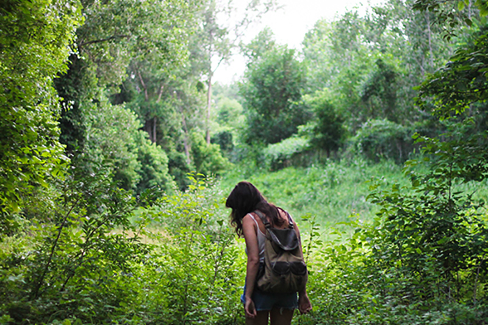

A cidade de São Paulo é cheia de surpresas, como o Horto Florestal,um importante parque de lazer e cultura localizado na zona norte dacidade de São Paulo.
Seus ecossistemas são o horto botânico e o arboreto. Além disso, contacom uma flora rica devido as áreas de proteção criadas pelo Poder Público,as chamadas Unidades de Conservação, nas quais destacam-se árvoresdas espécies pau-brasil, pau-ferro, carvalho-nacional e jatobá.
No local são encontrados animais como o macaco-prego, tucano, gambá, socó,garça, tico-tico, serelepe e martim pescador e diversos outros animaisque estão ameaçados de extinção.
O Horto Florestal também se destaca por abrigar uma notável população decapivaras. É importante lembrar que não se pode oferecer alimentosa qualquer animal silvestre presente na região. mulher andando na floresta do horto florestal
É possível fazer diversos passeios para entrar em contato com essa natureza. Alguns deles são: